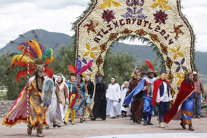
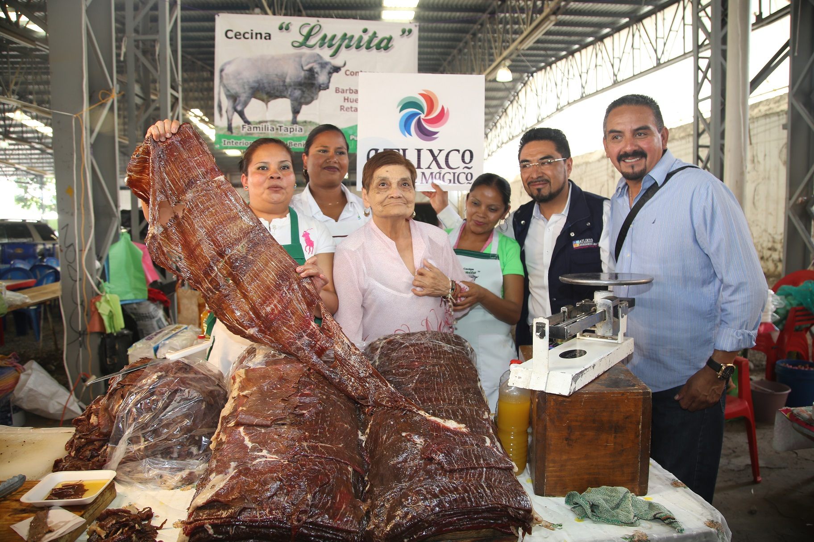
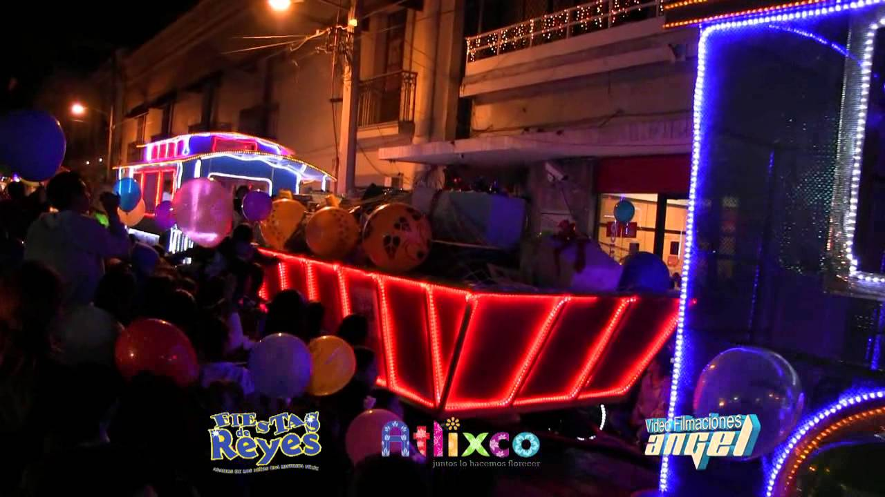
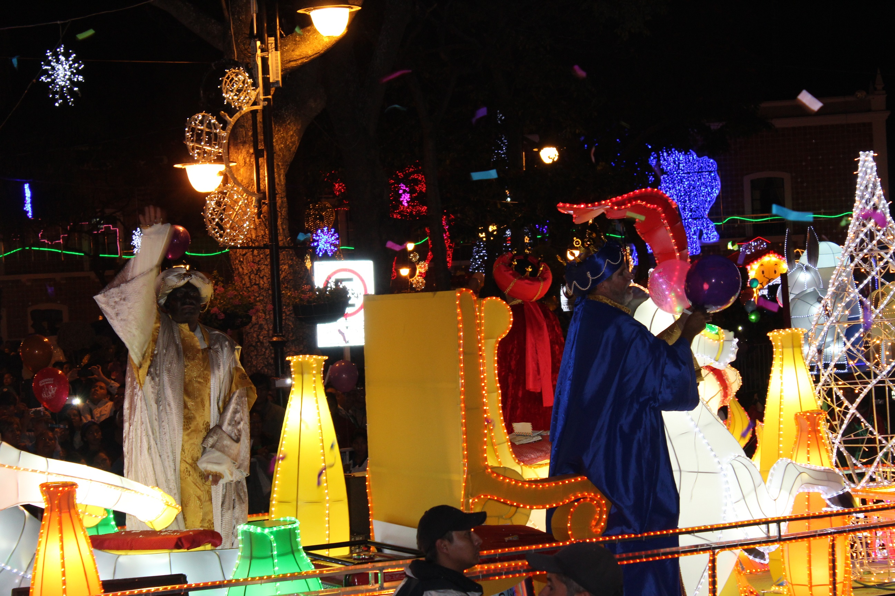

-
Ubicación
Lugares turisticos
-
Ex-convento del Carmen
-
Cerro de San Miguel
-
Calle de las flores
-
Hospital y pinacoteca San Juan de Dios
-
Templo de la Merced
-
Murales del Palacio Municipal
-
Viveros de Cabrera
Fiestas y festivales
Huey Atlixcáyotl
La Gran Fiesta de Atlixco”. Con una tradición de más de 48 años de música, danza y artesanías de las 11 regiones etnográficas del Estado de Puebla. Fue declarado Patrimonio Cultural del estado de Puebla el 29 de Julio de 1996. Hoy es la gran fiesta de los poblanos. Se celebra el último domingo de Septiembre en el Cerro de San Miguel.

Atlixcayotontli
La fiesta chica de la gran familia Atlixquense”, tiene lugar en el Cerro de San Miguel dos fines de semana antes del Huey Atlixcáyotl; es decir, el segundo domingo del mes de Septiembre. En ella se reúnen danzantes de las tres regiones que convergen La Región del Valle, La Región de La Tierra Caliente y la Región de los Volcanes (también conocida como la región de la Sierra Nevada).


Feria de la Cecina
En la última semana de julio primera de agosto se celebra uno de los platillos típicos de nuestra región, La Cecina, en un ambiente familiar amenizado con eventos artísticos, todo esto en el Recinto Ferial del Municipio.

Expo Flores y Plantas
En el mes de julio en el Recinto Ferial de Atlixco se realiza La Expo Flores y Plantas, donde productores de la región con toda una gama de Flores y Plantas exhiben su producto que le ha dado fama a los atlixquenses a nivel nacional en cuanto a la producción de Flor.
Fiesta de Reyes
Es un majestuoso desfile de 5 km de largo en el que más de 15 carros alegóricos, comparsas y bandas locales recorren las calles principales de la Ciudad. Los reyes magos visitan Atlixco el 5 de Enero gracias a que los niños hacen un Festival de la Ilusión en el que les piden que no se olviden de los más necesitados. Con asistencia de más de 60 mil espectadores la Fiesta de Reyes es desde hace mas de 18 años, un evento que involucra a gran parte de la comunidad del Municipio.


Feria de la Nochebuena
A partir del 25 de Noviembre los mejores productores de la región exponen y venden una variedad enorme de plantas de Nochebuena a precios competitivos en mayoreo y menudeo concentrados en el Recinto Ferial de Atlixco.


Villa Iluminada
Más de 45 días Atlixco se ilumina con espectaculares figuras que adornarán calles y avenidas en un recorrido que te dejara maravillado, además podrás disfrutar de eventos culturales y artísticos que harán de tu estancia algo mágico


Autoria
Nombre:
Luis Fernando Hernández Sánchez
Grado y grupo:
4° "H"
Especialidad:
Programación
Submodulo:
Desarrolla Aplicaciones Móviles
Lic. José Antonio Gómez Hernández
Atlixco, Tierra que florece
Luis Fernando Hernandez Sanchez
Ubicacion
Heroica Atlixco, también conocido como "Atlixco de las flores", es un municipio que se localiza al suroeste de la Ciudad de Puebla.
Es conocido por su buen clima y la gran actividad florística, comercial y turística que le valieron haber sido llamada Atlixco de las Flores y Granero de la Nueva España, durante la época colonial.
Su lema es: "Muy colonial e insigne muy hermosa y valerosa"
Atlixco, Tierra que florece
Ex-convento del Carmen
Construido entre 1600 y 1620 lo limita una enorme barda que abarca aproximadamente dos manzanas y es un claro ejemplo del estilo barroco de la época. Cuando fueron exclaustrados los religiosos en 1853 el lugar fue convertido en rastro, luego oficinas gubernamentales, escuela (cuando tiran su torre), cárcel y cuartel para tropas federales. Ahora es conocido como el Centro Cultural del Carmen y alberga un pequeño museo arqueológico.


Direccion: Calle 4 Nte. 204, Centro, 74200 Atlixco, Pue.
Atlixco, Tierra que florece
Cerro de San Miguel
También conocido como Popocatica (cerro que humea) o Macuilxochitpec (cerro de las cinco flores), es el lugar en donde se realiza la fiesta máxima de Atlixco que se lleva a cabo el último domingo de septiembre y para la que se reúnen los representantes de las once regiones culturales de Puebla. Pero aunque tu visita no coincida con la fecha, el lugar te ofrece una maravillosa vista panorámica y siempre puedes visitar la Capilla de San Miguel.

Direccion: Metztli 151, Ricardo Treviño, 74250 Atlixco, Pue.
Atlixco, Tierra que florece
Calle de las flores
Sobre la Avenida Hidalgo se encuentra esta emblemática calle denominada la Calle de las Flores, donde podrás apreciar sus renovadas fachadas adornadas con flores del municipio.
Durante el recorrido podrás apreciar las casonas que fueron reconstruidas, hasta llegar a la Escalera Ancha lugar donde se realizaba el Huey Atlixcáyotl y ahora tras su remodelación encontrarás un reloj gigante hecho a base de flores.


Direccion: Avenida Hidalgo, 303
Atlixco, Tierra que florece
Hospital y pinacoteca San Juan de Dios
Uno de los pocos hospitales de la época de la colonia que sigue conservando su uso original, así como una fuente de piedra que representa a San Adrián luchando con un león.
En la Pinacoteca podrás apreciar la colección de la vida de San Juan de Dios, fundador de la orden de los “Juaninos” quienes se encargaban de los hospitales en la Nueva España. El acceso a la pinacoteca municipal se solicita previa cita en las oficinas de turismo.
A un lado del hospital se encuentra la iglesia dedicada a San Rafael Arcángel, a quienes los juaninos se encomendaban.
Está prohibido tomar fotos y entrar con alimentos.
Direccion: 74200, Calle 11 Sur 303, Centro, Atlixco, Pue.
Atlixco, Tierra que florece
Templo de la Merced
Los Mercedarios en 1612 fundan este convento dedicado a la Visitación de Nuestra Señora de la Merced. La fachada es un muro almenado con dos grandes portadas coronadas por un nicho, un magnífico ejemplo del barroco de principios del s. XVIII.
El interior de la iglesia es de una sola nave de gran altura con crucero y cúpula. En la Iglesia se conservan interesantes pinturas. Accediendo al convento se encuentra un claustro sencillo con fuente y una interesante puerta de piedra con arco de medio punto decorada con flores y aves.

Direccion:Calle 3 Nte. 402, Centro, 74200 Atlixco, Pue.
Atlixco, Tierra que florece
Murales del Palacio Municipal
En el interior de Palacio Municipal así como en la planta baja del exterior (Ex Biblioteca), disfruta los murales de la Fundación de Atlixco, la Historia de la Educación en México o los Héroes de la Independencia y Reforma con diferentes estilos pictóricos, así como la vida obrera y textil que marco una época de grandeza en Atlixco, hasta los acontecimientos más sobresalientes en el municipio como lo es la Villa Iluminada.
Atlixco, Tierra que florece
Viveros de Cabrera
Uno de los muchos atractivos turísticos que ofrece el municipio de Atlixco son los viveros de la colonia cabrera, mismos que se han encargado de preservar el nombre de “Atlixco de las Flores” esto por la producción de más de 120 mil plantas que se tiene. Son más de 100 los viveros que se encuentran en toda esta colonia que gracias al turista, así como a los amantes de las flores día con día se va posicionando en el mercado como lugar favorito para llevarse un recuerdo viviente de este Pueblo Mágico.


Ubicacion
Atlixco, Tierra que florece


 1
1 5
5 6
6 7
7 8
8


 2
2 3
3 4
4 5
5 6
6 7
7 8
8